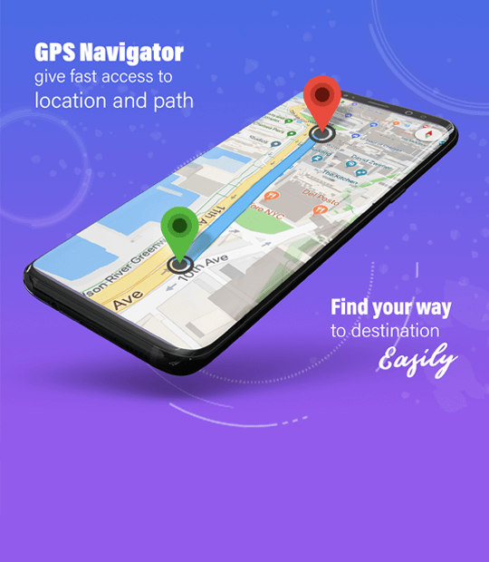

Revolutionizing the Uniben Journey: Your Ultimate Guide to the Student Web App
Introduction:
Navigating the academic landscape can be a daunting task, especially when you're embarking on the exciting journey at the University of Benin (Uniben). Imagine having a companion that not only simplifies your admission process but also transforms your course studies and enhances your campus life. This is exactly what our upcoming web app aims to achieve!
Section 1: Simplifying the Admission Process
1.1 Streamlining the Acceptance of Uniben:
Our web app is designed to make accepting Uniben as your choice of school a breeze. No more navigating through a maze of confusing information. We offer a user-friendly interface, providing all the necessary details and step-by-step instructions for a smooth admission journey. From required documents to submission deadlines, our app ensures you have everything you need at your fingertips.
Section 2: Empowering Students in Course Studies
2.1 Subject Summarizations:
Say goodbye to overwhelming textbooks! Our app simplifies course studies by offering concise and effective summarizations of subjects. Whether you're revising for an exam or need a quick reference, our subject summaries are tailored to enhance your learning experience. It's like having a personal study companion right in your pocket.
2.2 Interactive Video-Based Teaching:

Experience a new dimension of learning with our interactive video-based teaching. Engage with course materials through visually stimulating videos, designed to cater to various learning styles. We believe in making education not just informative but also enjoyable. With this feature, understanding complex topics becomes an immersive and interactive experience.
Section 3: Enhancing Campus Life
3.1 Events Brochures:
Stay in the loop with our comprehensive events brochures. From academic conferences to social gatherings, our app keeps you informed about all upcoming events. Dive into a vibrant campus life by exploring schedules, locations, and event details, fostering a sense of community and connection among Uniben students.
3.2 Campus Mapping:
Finding your way around campus has never been easier. Our app features an intuitive campus mapping system, ensuring you never get lost again. Search for specific locations, get directions, and discover points of interest effortlessly. Navigating the vast Uniben campus is now as simple as a tap on your device.
Conclusion:
As we prepare to launch this transformative web app, we're excited about the positive impact it will have on your Uniben experience. From simplifying admission to enhancing your academic journey and campus life, our goal is to empower you every step of the way. Embrace the future of education at Uniben with our student web app!